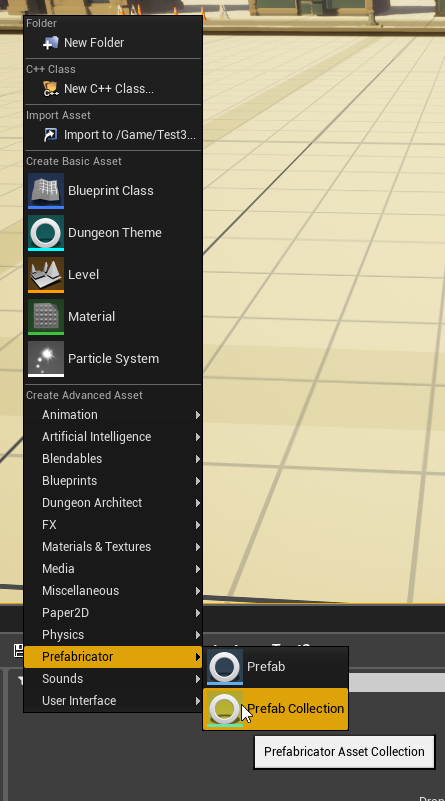
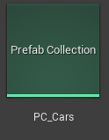
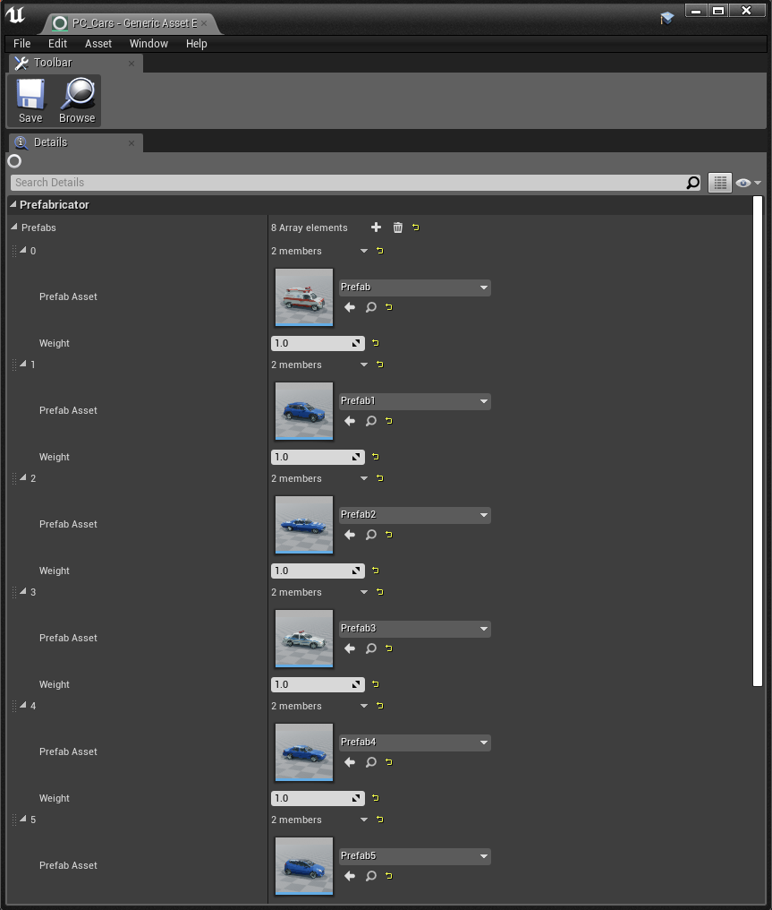
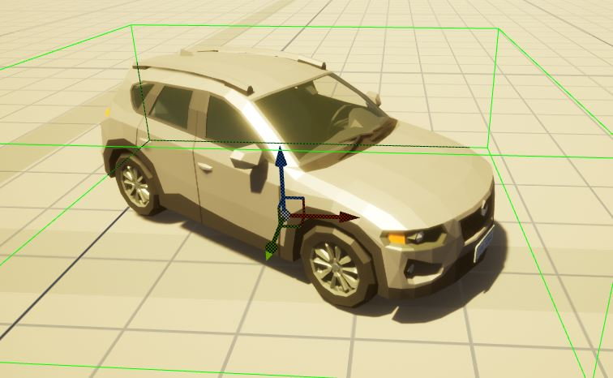
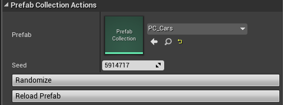
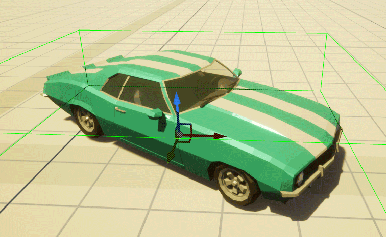

Prefab Collections¶
Group similar prefabs together into a prefab collection. You can then select a random item from this selection and open up interesting randomization possiblities
Create a new Prefab Collection asset
 Double click the asset and add the prefabs to the list
The Weights parameter affects the probabily of picking that item compared to the other items in the list
For e.g. if we have 4 items with weights (1, 1, 2, 1), the 3rd item will be twice as likely to be picked. This is the same as (10, 10, 20, 10) or (5, 5, 10, 5)
Prefab Collection assets work just like Prefab assets. You can drop these into the scene and assign them to the prefab actor
Drag and drop this asset on to the scene and it will pick a random prefab from the list
This is useful if you want to quickly populate the scene, you can use the same prefab collection and place it all over the map and have prefabricator pick random items from it
Note
Make sure all the prefabs in your collections have consistent pivots so all the items in the collection spawn consistently in the right place
Select the spawned prefab actor and click Randomize button on the Details window
 You can also duplicate the spawned prefab actor and the newly duplicated prefab actor will have a different randomized prefab, making it easy to quickly place different prefabs all over the scene